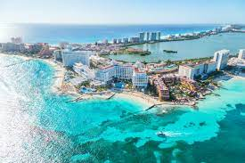

Cancun
Why do I want to go there?
What makes Cancun so popular among travelers is it's combination of nice beaches, turquoise blue sea, agreeable weather, and perhaps most important—excellent air and land connectivity. Cancun has been in the tourism business for so long, that it's a well-oiled machine.
What is in Cancun?
Playa Maroma (Maroma Beach), located at around km 55 of the Cancun-Chetumal Highway in the Riviera Maya, is considered by many to be one of the best beaches in the world due to its size, the incredible blue color of the water and amazing snorkeling right off shore.The Hotel Zone (or Zona Hotelera) is, by far, one of the safest areas in Cancun. As its name indicates, The Hotel Zone is a long strip along the Cancun beach lined with hotels, most of them all-inclusive.
Click here to go back and read about more places.
